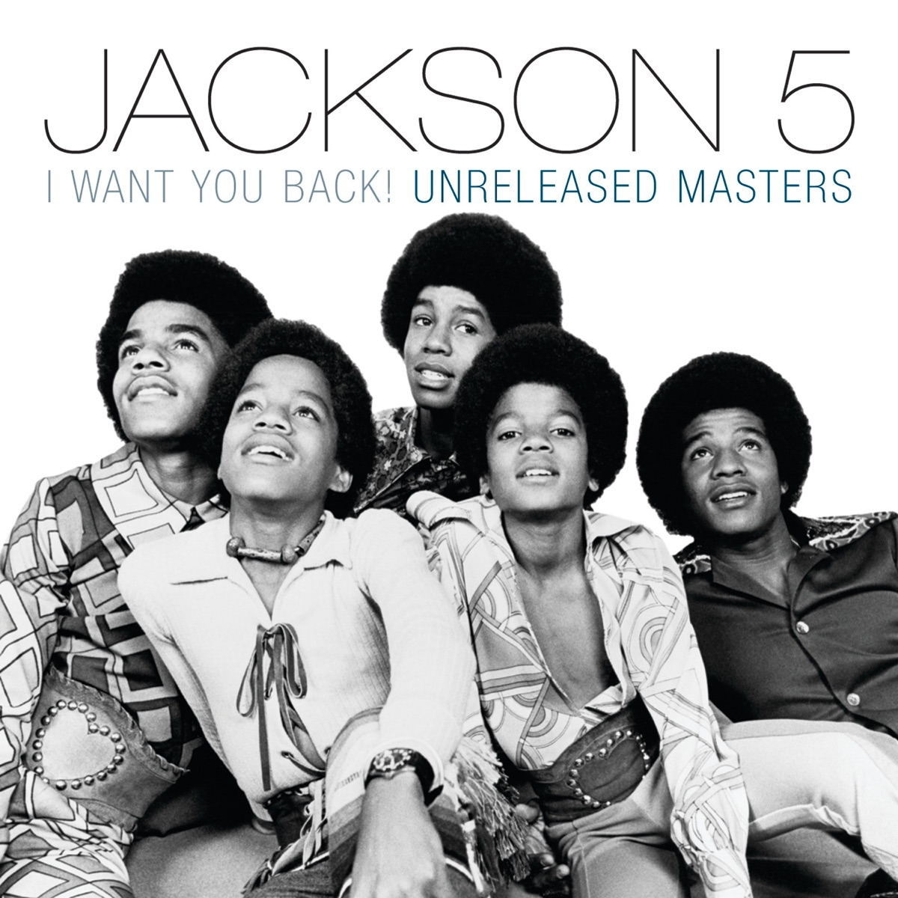

안녕하세요 라보엠입니다.
쿠플로 스트리밍된 사랑 후에 오는 것들로 많은 인기를 얻고 있는 사카구치 켄타로 주연의 새로운 넷플릭스 드라마 이별, 그 뒤에도를 보기 시작했습니다. 오늘은 이 드라마에 중요한 곡으로 나오는 I want you back 을 소개해드리려고 합니다.
넷플릭스 이별 그 뒤에도
넷플릭스 드라마 이별, 그 뒤에도는 훗카이도와 하와이를 배경으로 남자친구 유스케를 사고로 잃은 여자 사에코(아리무라 카스미)와 그 남자친구의 심장을 이식한 남자 나루세(사카구치 켄타로)의 죽음을 초월한 사랑를 그리고 있습니다. 이 드라마에서 사에코는 유스케와 하와이 공항에서 처음 만나게 되는데요, 이 때 유스케는 흥겨운 리듬의 잭슨파이브의 I want You Back 를 피아노로 연주하며 사에코에게 힘을 줍니다. 나루세도 하와이에 갔다가 같은 장소에서 같은 곡을 연주하며 유스케와 이어져 있음을 암시하는 중요한 역할은 합니다.
노래의 탄생
모타운 레코드에서 1969년 10월 발매된 I Want You Back은 잭슨 파이브의 데뷔 싱글이자 그들을 스타덤에 올려놓은 기념비적인 곡입니다. 이 노래는 원래 글래디스 나이트 & 더 핍스나 다이애나 로스를 위해 I Wanna Be Free라는 제목으로 작곡되었지만, 모타운의 수장 베리 고디의 요청으로 잭슨 파이브를 위해 재작업되었습니다.
I Want You Back은 '더 코퍼레이션'이라는 작곡가 그룹에 의해 만들어졌습니다. 이 그룹은 베리 고디, 프레디 페렌, 알폰소 미젤, 디크 리처드로 구성되었습니다. 그들은 잭슨 파이브의 독특한 재능을 최대한 살리기 위해 노력했고, 특히 마이클 잭슨의 뛰어난 보컬 능력을 돋보이게 하는 데 주력했습니다.
이 곡은 모타운 사운드의 전형적인 특징을 잘 보여줍니다. 강렬한 베이스 라인, 화려한 호른 섹션, 리드 보컬과 백그라운드 보컬의 상호작용, 그리고 손뼉 치는 소리와 탬버린 등이 어우러져 독특한 사운드를 만들어냅니다. 특히 11살 마이클 잭슨의 파워풀하고 감성적인 보컬이 곡의 매력을 한층 더합니다.
I Want You Back 가사
Uh-huh, huh, huh
Just let me tell you now
Uh-huh
When I had you to myself, I didn't want you around
Those pretty faces always made you stand out in a crowd
But someone picked you from the bunch, one glance was all it took
Now it's much too late for me to take a second look
Oh, baby, give me one more chance (to show you that I love you)
Won't you please let me back in your heart
Oh, darlin', I was blind to let you go (let you go, baby)
But now since I see you in his arms (I want you back)
Yes, I do now (I want you back)
Ooh, ooh, baby (I want you back)
Yeah, yeah, yeah, yeah (I want you back)
Na, na, na, na
Trying to live without your love is one long sleepless night
Let me show you, girl, that I know wrong from right
Every street you walk on, I leave tear stains on the ground
Following the girl I didn't even want around
Let me tell you now
Oh, baby, all I need is one more chance (to show you that I love you)
Won't you please let me back in your heart
Oh, darlin', I was blind to let you go (let you go, baby)
But now since I see you in his arms, uh-huh
Ah, buh bum, bum, bum
Ah, buh bum, bum, bum
All I want
Ah, buh bum, bum, bum
All I need
Ah, buh bum, bum, bum
All I want
Ah, buh bum, bum, bum
All I need
Oh, just one more chance to show that I love you
Baby (baby)
Baby (baby)
Baby (baby)
Forget what happened then (I want you back)
Let me live again
Oh, baby, I was blind to let you go
But now since I see you in his arms
(I want you back)
Spare me of this cause
Get back what I lost
Oh, baby, I need one more chance, ha
I tell ya that I love you
Baby (oh), baby (oh), baby (oh)
I want you back, ha
I want you back
노래의 가사는 한 번의 실수로 사랑하는 사람을 잃어버린 후, 후회하며 다시 한 번 기회를 달라고 애원하는 내용을 담고 있습니다. 이는 청소년들의 순수한 감정을 잘 표현하면서도, 모든 연령대가 공감할 수 있는 보편적인 주제를 다루고 있습니다.
마이클 잭슨 전설의 시작
I Want You Back은 발매 즉시 대중의 폭발적인 반응을 얻었습니다. 1970년 1월 31일, 빌보드 핫 100 차트 1위에 올랐고, R&B 차트에서는 4주 연속 1위를 기록했습니다. 이는 잭슨 파이브가 연이어 4개의 싱글을 1위에 올리는 놀라운 기록의 시작이 되었습니다. 이 노래는 잭슨 파이브를 일약 스타로 만들었을 뿐만 아니라, 흑인 음악이 주류 팝 시장에서 성공할 수 있다는 것을 보여주는 중요한 사례가 되었습니다. 특히 어린 나이의 흑인 소년들이 이룬 성공은 당시 미국 사회에 큰 반향을 일으켰습니다.
I Want You Back은 시간이 지나도 변치 않는 명곡으로 인정받고 있습니다. 2019년에는 롤링 스톤지가 선정한 '역사상 가장 위대한 노래 500곡' 중 121위에 선정되었고, 1999년에는 그래미 명예의 전당에 헌정되었습니다.

맺음말
I Want You Back은 단순한 히트곡을 넘어 팝 음악의 역사를 새로 쓴 곡이라고 할 수 있습니다. 잭슨 파이브의 뛰어난 음악성과 모타운의 세련된 프로듀싱이 만나 탄생한 이 곡은, 50년이 지난 지금도 여전히 많은 이들의 사랑을 받고 있으며, 영화나 드라마에서도 많이 사용되고 있습니다. 그것은 이 노래가 가진 보편적인 감성과 시대를 초월한 음악적 매력 때문일 것입니다.
오늘 이 노래와 함께 켄타로의 매력으로 빠져보시면 어떨까요? 마이클 잭슨의 전설의 시작 I want You Back 추천드립니다.